sEMG-Controlled Soft Robotics Glove for Game-Based Hand Rehabilitation
Soft pneumatic actuator design, machine-learning gesture recognition, and bilateral hand assistance integrated with an interactive rehabilitation game.
Summary
- Research question
- Can machine-learning-based sEMG gesture recognition coordinate an interactive game and soft-glove assistance for bilateral hand rehabilitation?
- What I did
- Designed, simulated and fabricated soft pneumatic actuators, and contributed to machine-learning gesture recognition and its integration with pneumatic control and the rehabilitation game.
- Key result
- The fabricated soft actuators achieved approximately 120–180° of bending at 100 kPa. Gesture-based control integrated glove inflation and release with a one-degree-of-freedom rehabilitation game.
Overview
This project extended our earlier sEMG-based rehabilitation protocol by adding a soft pneumatic glove for physical hand assistance. Machine-learning-based gesture recognition converted forearm muscle activity into commands shared by the rehabilitation game and the glove.
We employed a bilateral master–slave strategy: the functional hand provided the command, while the glove assisted movement of the impaired hand. A hand-close command produced actuator inflation and flexion; an open/rest command released pressure and allowed passive extension.
Bilateral control
In this bilateral master–slave control strategy, sEMG from the functional forearm provided commands for the rehabilitation game and the assistive glove. A Raspberry Pi processed the signals, recognised the hand state and coordinated game interaction with pneumatic actuation. Visual feedback from the game guided the participant’s subsequent movement.
![System schematic. Within the participant, the functional hand is the master input: a Myo armband on its forearm acquires sEMG and sends it to a Raspberry Pi 4, which performs signal processing and machine-learning gesture recognition and outputs one of two states, close or open/rest. The state branches to the interactive game, Cave Dive, where the ball moves up or down, and to the pneumatic drive of pump and valve, which supplies air to inflate or release the soft glove on the impaired hand, the slave. The game gives visual feedback to the participant.](../assets/img/glove/glove-integration-loop.svg)
Actuator design
The glove was designed around adult hand dimensions. Design targets from the literature were a mass below 0.5 kg, a flexion force of 10–15 N for grasping everyday objects, and enough bending for a closed fist: about 160° at the thumb and 250° at the middle finger.
The final actuator is a semicircular single-chamber silicone actuator. Fibre thread wound around the body restrains radial expansion and a fabric layer along the flat base limits strain on that side, so that pressurisation bends the actuator towards its base. Each finger carries one actuator, 20 mm wide and 20.5 mm high, with its length matched to the finger; the glove measures 215 × 95 × 20.5 mm, and all five actuators are supplied in parallel from one pneumatic line.

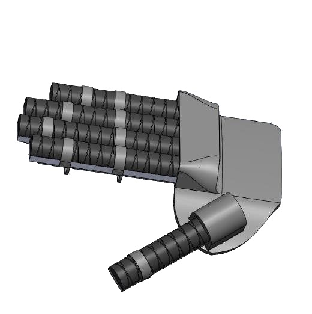
| Finger | Actuator length (mm) |
|---|---|
| Thumb | 90 |
| Index | 100 |
| Middle | 110 |
| Ring | 105 |
| Little | 85 |
The design developed through three geometries. A first concept placed a soft core inside a segmented hard shell. A multi-chamber actuator with a row of chambers along its top was then modelled and analysed by finite elements. The final fibre-reinforced semicircular actuator kept the intended bending with a simpler shape that was easier to cast and to fit to the glove.
Design iterations


Finite-element analysis
The multi-chamber geometry was modelled as a PneuNet-type index-finger actuator in ANSYS 2020 R2. The nonlinear static structural analysis fixed one end and ramped the internal pressure to 50 kPa, with the silicone represented by an incompressible second-order Yeoh model.
W is the strain-energy density and Ī1 the first invariant of the isochoric right Cauchy–Green deformation tensor.
At 50 kPa the simulated multi-chamber actuator curled into an arc, with a maximum total deformation of approximately 109.6 mm at its free end and a peak equivalent (von Mises) stress of 0.297 MPa near the fixed end, concentrated in the layer beneath the chambers.
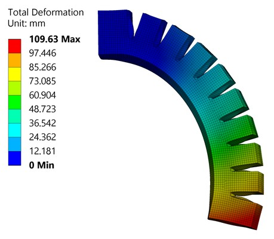

Fabrication
The actuators were cast by soft lithography in two-part moulds designed in SolidWorks and printed in PLA: the upper part forms the semicircular body and the lower part carries the rod that forms the air chamber. Ecoflex 00-30 silicone was poured into moulds sealed along their edges with silicone sealant. The strain-limiting buckram (stiff cotton) layer was applied along the flat base, fibre thread was wound around the body, and the open end was closed with silicone and buckram. 3D-printed connectors joined each actuator to its tube.

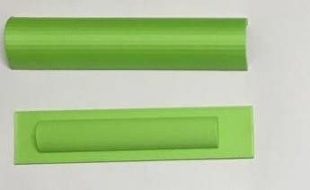
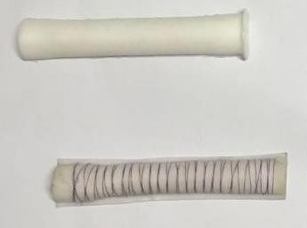
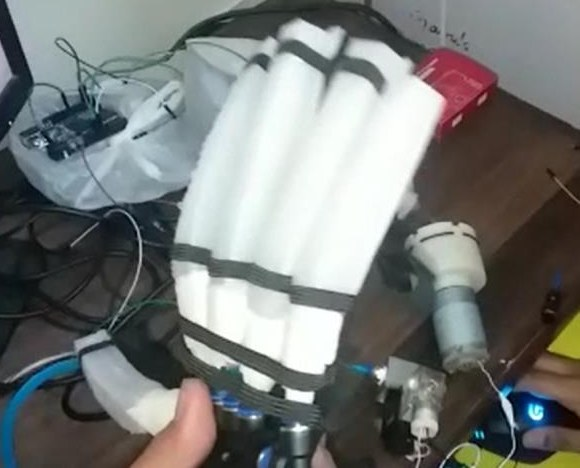
Two practical problems shaped the final process. Air trapped in the silicone formed bubbles; degassing the filled moulds under vacuum while they cured, with a pressure cooker serving as the vacuum chamber, reduced them. Leaks at the tube connections lowered the available pressure; binding the joints with thread and tape and replacing PVC tubing with silicone tubing, which bonded better to the actuators, reduced them.
Gesture recognition and control
Hand gestures were recognised from forearm sEMG by machine learning. The Myo armband streamed raw eight-channel sEMG at 200 Hz to the Raspberry Pi through its Bluetooth dongle. The signals were band-pass filtered and divided into windows, and four time-domain features (integrated EMG, mean absolute value, root-mean-square value and waveform length) were computed for each channel and standardised. A decision-tree classifier mapped these features to the two hand states, close and open/rest.
The decision tree was selected after comparison with other classifiers, including the ensemble methods XGBoost and random forest, because its computational simplicity suited real-time prediction on the Raspberry Pi. A threshold detector on signal amplitude was also implemented as a simpler alternative for the same two states.
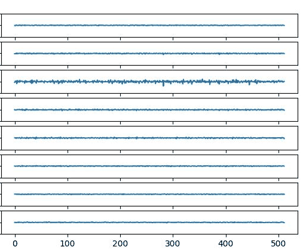
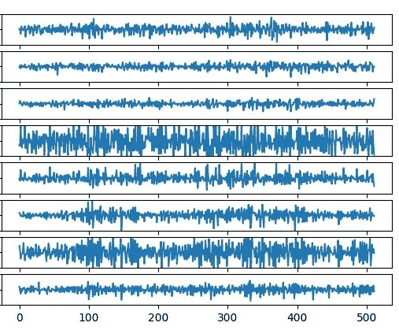
Feature definitions
xi is the i-th sample of one channel in a window of N samples. Each feature is computed per channel and standardised before classification.
The recognised state switched the pneumatic drive through a two-channel relay. A close command switched on the 12 V diaphragm pump and opened the solenoid valve, inflating the five actuators in parallel, and the actuation state was held while close persisted. An open/rest command switched both off, releasing the pressure so that the actuators relaxed.

Hardware details
| Component | Specification | Role |
|---|---|---|
| Controller | Raspberry Pi 4, 2 GB | Recognition, game and switching |
| sEMG input | Myo armband, eight electrodes, Bluetooth | Forearm signals of the functional hand |
| Pump | 12 V diaphragm pump, rated to 100 kPa and 15 L/min | Air supply |
| Valve | 12 V on/off solenoid valve, two ports | Opened with the pump for close |
| Relay | Two-channel relay module | Switches pump and valve from the Pi |
| Tubing | 4 mm inner, 6 mm outer diameter; silicone at the actuators | Air lines to the five actuators |
Interactive rehabilitation task
Cave Dive is a one-degree-of-freedom game: a ball travels through a cave, avoiding spikes on the ceiling and floor while collecting apples. Its single movement axis and two command states map directly onto the two states of the glove.
| Command | Game | Glove |
|---|---|---|
| Hand close | Ball ascends | Inflates |
| Open/rest | Ball descends | Releases |
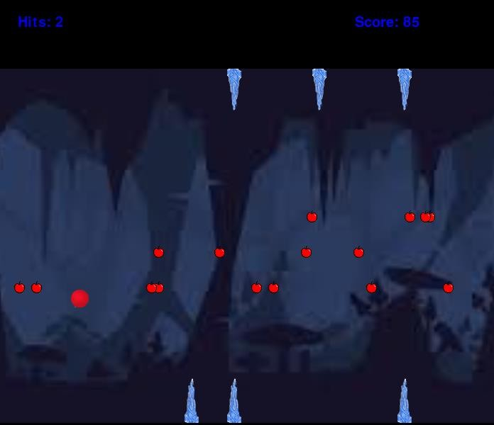
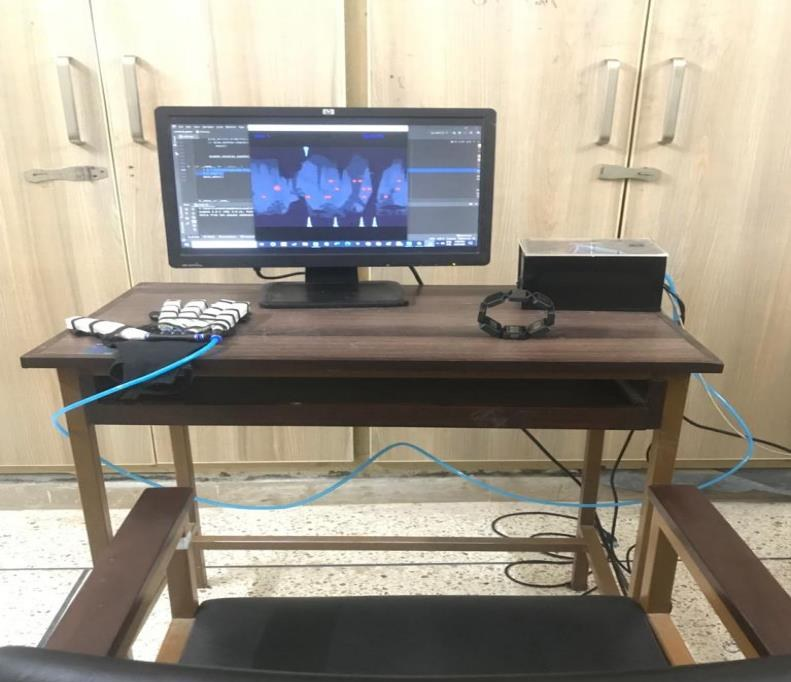
Results
Actuator performance
The fabricated fibre-reinforced actuators achieved approximately 120–180° of bending at 100 kPa. Inflation produced finger-flexion assistance, while pressure release allowed the actuators to relax for passive extension.
Integrated rehabilitation interface
The integrated system translated recognised hand states into coordinated game commands and pneumatic actuation. Hand closing triggered glove inflation and upward movement in the one-degree-of-freedom task; opening or relaxing the hand triggered pressure release and downward movement. This extended the earlier sEMG protocol by coupling interactive task practice with physical hand assistance.
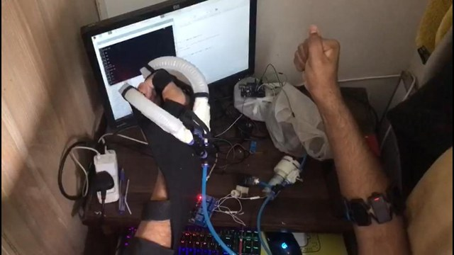
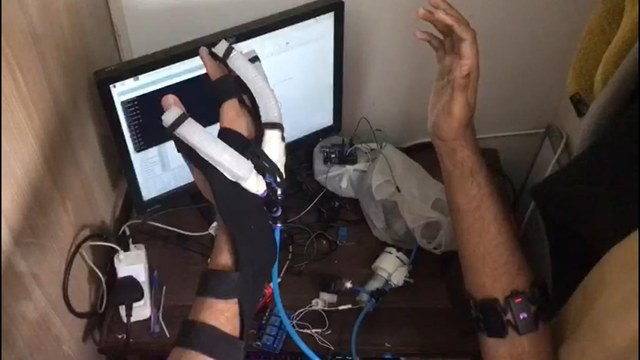
Project information
- Project
- REHABOTICS, final-year design project, B.E. Mechanical Engineering
- Institution
- School of Mechanical and Manufacturing Engineering (SMME), NUST
- Duration
- 2023–2024
- Supervision
- Dr Asim Waris; co-supervisor Dr Omer Gilani
- Team
- Muhammad Farhan, Muhammad Mustafa Khan, Ammar Shahzad and Hamza Suhaib Qarni
Report: M. Farhan, M. M. Khan, A. Shahzad and H. S. Qarni, “Design and Fabrication of EMG Driven Exoskeleton for the Post Stroke Rehabilitation Using Pattern Recognition Techniques”, final-year project report, SMME, NUST, June 2023.